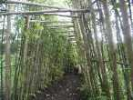
Le festival de Tours se déroule sur la Plaine de la Gloriette, entre Cher et Loire, inondée l'hiver, mais à cette époque couverte d'immenses prairies bien tondues, sauf la partie "jardins potager" artistiquement arrangée, bien qu'en fin de saison, ça devienne un rien sauvage...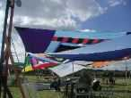
On est accueilli par les vélums de Michel Gressier, utiles certes, mais surtout quelle splendeur !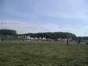
Derrière, la grande prairie où s'installent les monofils, avec quelques arches et pas mal de tentes. Une des particularités du festival : le public a accès partout et se mélange aux cervolistes ce qui est sympathique et on remercie l'organisation d'oser prendre ce risque. Beaucoup de questions, parfois naïves et souvent répétées (jusqu'à quelle altitude vous montez avec celui-là ?), mais c'est toujours motivant de faire partager un peu de sa passion.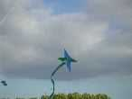
Et puis plein de cerfs-volants originaux, comme cette structure à 4 cotés apparemment simple et assez esthétique...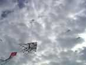
Ou ce delta, classique de construction, sur lequel on voit juste quelques volutes de près, mais qui révèle un masque dès qu'il s'éloigne.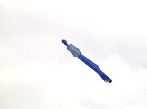
Ou encore le petit marin de Thérèse dont on ne se lasse pas.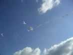
Thérèse n'est d'ailleurs pas en mal de création. Sur le terrain avec du papier et des ciseaux (à ongles, courbes, sinon c'est trop facile...), elle crée des cerfs-volants de 10 cm qui volent impeccablement quand ils sont dans leur plage de vent (les papillons au-dessus sont de Didier Ferment).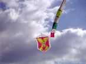
L'insigne de la Base Aérienne de Cognac, consacrée à la formation, se défend bien.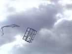
Une ouverture sur l'azur pas si facile à faire voler correctement.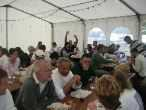
A midi, enfin un peu plus (au moins), repas sous la tente. Le premier jour, Blanquette de Veau extra. Le deuxième, repas chinois pour garder la ligne. Attention au porc à l'ananas, pari risqué dans les assiettes en carton et qui a dégouliné sur 30% des pantalons (statistique IFAUP).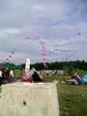
Retour au terrain : cette mini-arche de CVs de 15 cm est armaturée par des fétus de carbone de 0,3 mm de diamètre, au jugé.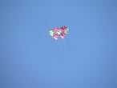
Cette structure est originale et décorative.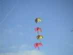
Un train qu'on peut interpréter selon divers thèmes. Des oiseaux, des feuilles ? Dorés et argentés, ça doit être des anges.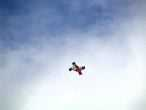
Un cerf-volant dont la configuration est complètement incompréhensible.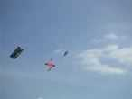
Oui, c'est le même. Après étude, il forme une sorte de boîte avec des parois enroulées en oblique.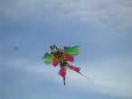
Dans un domaine complètement différent, une hirondelle traditionnelle chinoise ? Oui, mais celle-ci a une taille d'homme, et mitige bambou et carbone.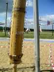
Les Jardins du Vent comprenaient beaucoup d'instruments de musique. Au premier plan, une harpe en bambou qui sonne quelle que soit l'orientation du vent, mais avec des sons différents car les cordes sont différentes. On peut aussi la tourner pour varier le timbre. La "harpe" (sic) de derrière est en plastique, quand même moins esthétique, c'est le moins qu'on puisse dire...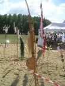
Celle-ci est apparemment plus proche du banjo, et de construction plus complexe.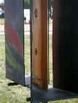
Cette splendide harpe, travail de véritable ébéniste est maintenant habillée d'un carénage. J'espère qu'il apporte quelque chose à la sonorité ou au volume sonore...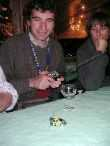
Samedi soir : dîner sous la tente. En attendant les surprises promises, d'abord on mange, ensuite on s'amuse. Christophe ne peut s'empêcher de tripoter une télécommande. Avec l'auto Claude jouera à la tartine hantée...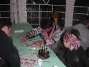
Toute la journée ont déjà eu lieu des combats meurtriers qui se poursuivront le lendemain. Le soir on distribue des combattants blancs, de la peinture et des pinceaux. Mais c'est Ludo qui a le plus joli coup de patte, après de longs stages chinois et indiens...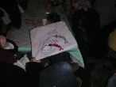
Le coup de patte et la technique... Je l'ai vu décorer des cerfs-volants avec des bambous de 5 cm de large tracés d'un seul coup de pinceau ! Et ses crevettes sont splendides !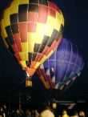
Deuxième show: les montgolfières miniatures : On a vu en crépusculaire des montgolfières de quelques mètres de diamètre.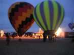
Toujours télécommandées (mais seulement le brûleur), et tenues en laisse si le vent est trop fort, elles offrent déjà un beau spectacle...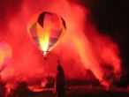
Il y en a même de toutes petites... Environ 1,50m de diamètre. Aidées de fumigènes et de torches de détresse, elles offriront une fantasmagorie lumineuse.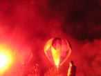
Les jardins potagers de la Gloriette forment un cadre magnifié par les illuminations et les rideaux de fumée...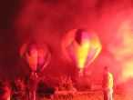
Splendide spectacle, même s'il faudra un peu éteindre la végétation sèche après !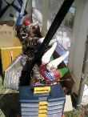
Mais le lendemain, le vent est faiblard au matin, et les dragons grincent des dents dans leurs cartons...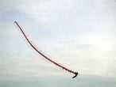
Enfin celui de Michel décolle et vole avec une stabilité inégalée. Faut dire qu'il a passé 6 heures à le régler !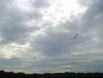
Dans l'après-midi, ils se retrouveront tous en l'air !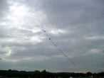
On voit même des prouesses techniques, comme le Double Dragon qui en rassemble deux face à face !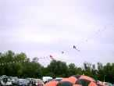
Et cet ensemble vole aussi bien qu'un grand dragon, il faut juste du monde et du doigté pour le décollage !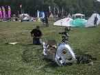
Guillaume a pris le parti de la modernité, avec du milar argent, 400 disquettes de format normal et je ne sais combien de grand format pour les écailles de la tête ! Mais quel courage pour monter et démonter cet ensemble, qui ne volera malheureusement pas longtemps, un peu lourd pour les vents légers de ce dimanche.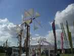
Dans les jardins du vent, les moulinets commencent à tourner. Ceux de Joel sont là, évidemment, mais aussi des créations en bambou aux voiles portugaises. De plus en plus également de flûtes de toutes les formes.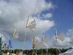
Ces flûtes-ci ont une jolie dérive en voile de jonque qui permet de ne pas avoir à les réorienter manuellement à chaque saute de vent !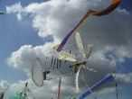
Un moulinet de plume actionne ce carillon de mini-bambous.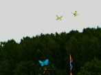
Monsieur LI Ruo Xin fait voler des papillons de 8 cm en couple avec un petit balancier comme pour un mobile suspendu ! Il faut voir leur vol... papillonnant pour apprécier vraiment !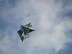
Ce CV sur une armature genre rokkaku en est finalement très différent, avec des cotés plutôt kimono...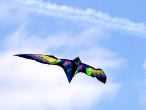
Claude a créé dans son style habituel (très coloré de teintes somptueuses) ce magnifique oiseau qui vole très bien, et qui bat même des ailes quand on le sollicite.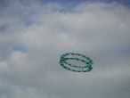
Profitant du vent qui s'est levé, les roues font de même. Ici, celle de Xavier (5,35 m) ?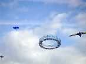
Celle de Michel est très grande (8 m), et très belle !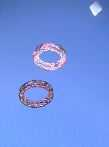
On en arrive à des vols de groupe, mais pas assez serrés pour la photo. J'aime bien la roue du haut, d'Hugo et Audrey. Celle d'en bas (6 m) est à Claude.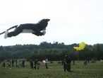
Et puis, last but not least, il y a eu aussi de grands gonflables (faudra me trouver un terme, les gonflablistes, "gonflables" c'est pas bien beau) ! Ici Rominet convoite Titi, mais que les âmes sensibles se rassurent, il ne l'aura pas !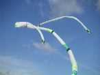
Vierzon a sorti son oeuvre maîtresse, généreux flow-form doté de queues immenses...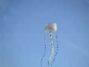
Michel n'est pas en reste avec "Le Ciel pour Cimaise" très réussi et aussi volumineux que le Vierzon, à vue de nez.Mais finalement, l'essentiel n'est-il pas mieux dit par les yeux de ce garçon auquel j'ai confié mon Albatros ?